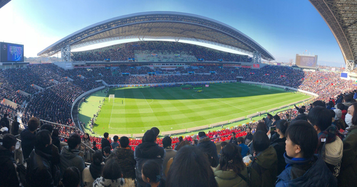
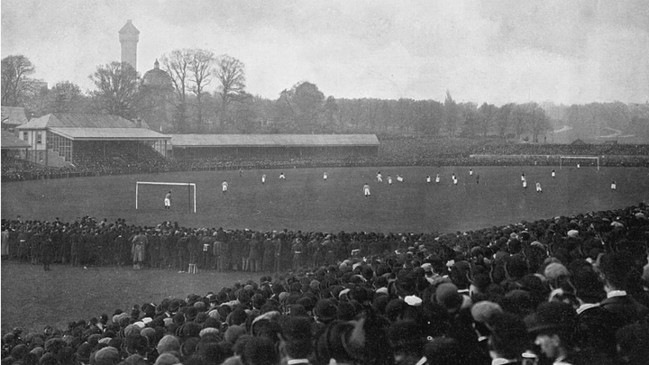
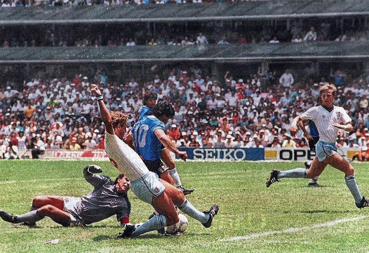
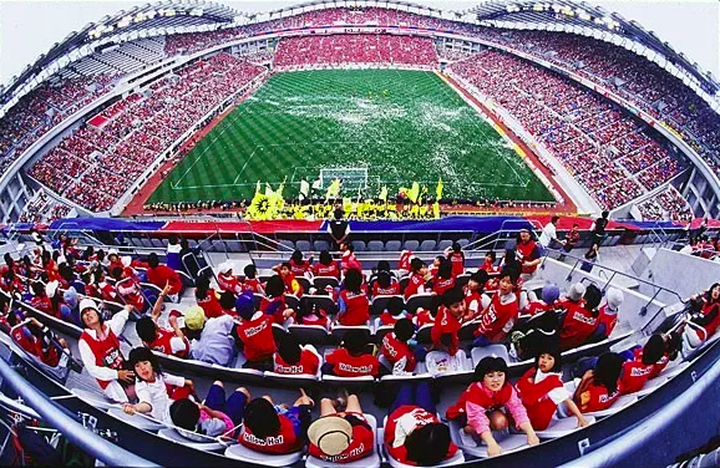
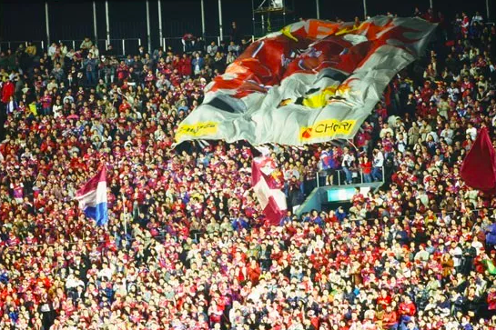
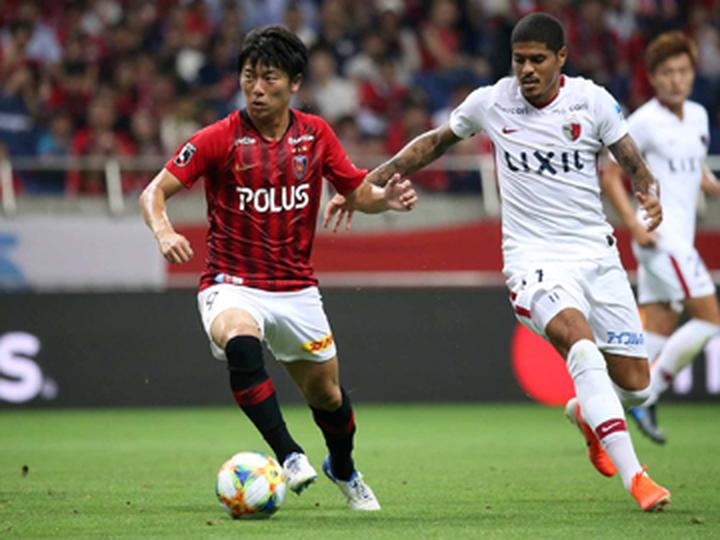
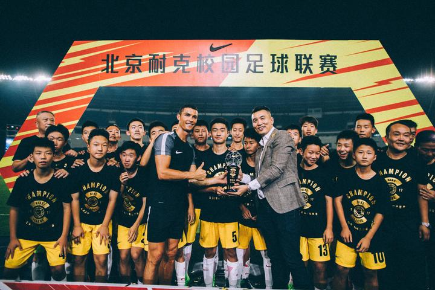
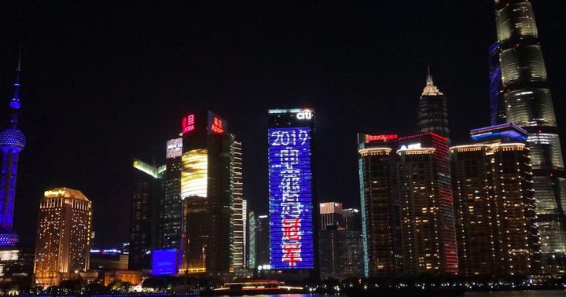

懂球帝首页>足球新闻> 深度丨从运动到生活，足球文化与其在中国的境遇
深度丨从运动到生活，足球文化与其在中国的境遇
Dr.T 01-04 11:11
本文特约撰稿：T君

座无虚席的日本高中足球联赛决赛
“在英格兰，足球重构了人们的业余生活；在日本，足球染上了鲜明的地域色彩。我们憧憬着这一天的到来——在周末带着自己的孩子走进所在城市的球场，跟他/她分享这些为这座城市这片街区战斗着的年轻人的点点滴滴，自豪地告诉我们的下一代：我可是看着这帮好小子踢球长大的。”
| 终极问题：为什么中国发展不好足球
伴随着2021年世俱杯和2023年亚洲杯落地中国，全国各地建设或改造现代化专业足球场的工作已经全面铺开，届时与普通大众的观赛热潮一道，自上而下、自下而上，中国势必掀起新一波足球运动热。
自日韩世界杯以来，中国足球事业的发展几经波折。上至球员下至球迷，人们无数次地希望而来，又无数次地失望而归。十几年的起起伏伏之间，我们不仅记住了无数“中国足球”令人啼笑皆非的“梗”和段子，也在一次次的反思中对“足球”这一运动本身有了越来越深的理解。
我们渐渐明白，真正支撑着一个国家的足球运动的“职业足球”到底是怎么一回事，所谓的“足球教育”又到底有多重要。这么多年熬过来的中国球迷，即使对4-3-3或4-2-3-1不甚了解，但一谈到足球政策或青训或归化之类绝对都能侃侃而谈滔滔不绝。
但是，无论我们怎么抱怨怎么分析，总是会回到这样一个终极问题上来：足球，作为众多现代职业运动中的一个，为什么在中国就是发展不好呢？
2022年世界杯预选赛，中国1-2叙利亚
答案可能就藏在我们对这一问题的反思之中：为什么我们要在中国发展足球运动呢？
可以预见，对这一问题的回答形形色色。近者可翻出红头文件论理，远者可上及“东亚病夫”诉苦。不过大体上，其中一类是在“足球运动”之外寻求原因。“发展足球有利于____（政治/文化）”大概是这一类分析的最终句式。因此，“某某国脚不爱国没有吃苦精神”或者“中国人根子里就没有团队精神”常常被视为中国足球的症结所在。
然而，在这种宏论之外，越来越多的年轻人开始有了这样的思考：为什么我们需要“发展”足球？
作为一个现代国家，面对一种现代运动，为什么足球无法在中国自然地“生长”？为什么我们不能不为“有利于”去发展足球，而仅仅为了足球而足球呢？让足球的归足球，政治/文化的归政治/文化不行吗？
当体育运动自身的发展和人们对它的思考不断发展，体育——在这里具体而言是足球运动——逐渐开始要求作为独立领域的自律：正如19世纪以来文学和艺术领域那样，体育运动也开始要求其价值不再来源于外部；“为艺术而艺术”，自然我们也可以“为体育而体育”。
在我们这个时代，这种价值中立的哲学终于将它的福音传达到了中国的竞技场之内。一种“纯体育”的思潮开始泛滥，而其首先冲垮的正是人们对体育运动的价值判断。
2018年世界杯预选赛，孙兴慜帮助韩国3-2战胜中国
这或许正是为何奥运会金牌榜越来越难以引起年轻观众的兴趣的原因。比起羽生结弦的国籍，中国观众们显然更关注他的绝美舞姿；而谈论到孙兴慜“孙球王”时，揪住其韩国国籍不放渐渐被视为是可笑的或者说，“不专业的”。
在这种“纯足球”的思路下，中国足球的颓势只能归结于：中国的现代化（在球迷看来，不仅指足球联赛的职业化程度，还包括一种所谓的“职业的”思维）发展还远远不足。或者更为严重的结论：现代中国和现代足球八字不合。
不论两种思考的分歧有多大，结果都只能增加焦虑。在小小的足球面前，再一次地，我们被逼迫回到“中国文化”与“现代化”的分歧之间。而这其间究竟存在着怎样的解法，大概谁也回答不出。
因此，我们有必要回到现代足球诞生的地方，看看其是如何“发展”或者“生长”起来的；再回到东方，回到和克洛普谈笑风生的南野拓实的家乡，看看作为外来运动是如何在东瀛落地生根的。
| 起源：英格兰职业足球的诞生
现代职业足球兴起于19世纪后期的英格兰，其首先与英格兰工人阶级的壮大密切相关。

19世纪末的英格兰足总杯决赛
“在最早的19世纪70年代中期至19世纪80年代中期或后期，足球获得了我们现在仍熟知的所有制度和仪式上的特点：职业化、联赛、足总杯（怀着无产阶级在首都胜利之信念的一年一度的朝圣）、定期到场观看周六的比赛、‘支持者’和他们的文化、仪式上的对抗、通常发生在一个工业城市或大都市的不同部分之间（曼彻斯特城队与曼彻斯特联队，诺丁汉城队与诺丁汉森林队，利物浦队与埃弗顿队）。……足球同时在地方和国家范围内进行，所以有关当天比赛的话题就为英格兰或苏格兰的任何两个男性工人间的谈话提供了共同基础，而一些著名的得分手则为所有人提供了共同的参照点。”（《传统的发明》，370页）
“英国足球职业化的结构与贵族或中产阶级参与（板球）或控制（赛马）的体育项目的职业化相当不同，也与通俗的娱乐产业的结构以及工人阶级命运的其他方式不同，后者也为一些穷人的体育项目（如拳击）提供了典范。”（《传统的发明》，371页）
正是由于参与者与观众主要为工人阶级，比赛的时间（周末）以及球迷会的组织形式（与工会如出一辙）都深受其影响。不过，这都是19世纪70年代之后的故事了。“现代足球”和“现代职业足球”虽然常常被视为同义词，但在这里我们需要注意的是“现代足球”在19世纪70年代“职业化”之前的历史。
19世纪英格兰的公学教育有着培养所谓“健壮的基督徒”（Muscular Christianity）的传统。其源头之一则是拉格比公学（Rugby School），这里也是英式橄榄球（rugby）的发源地。学生被要求通过一种有激烈身体对抗的球类运动以塑造坚强的性格，而这也被认为是统治大英帝国所需要的美好品质（而常常被作为大英帝国的参照物的罗马帝国，在当时的学者和大众看来，正是亡于统治阶级的柔弱）。而另一项典型的英式运动——板球，则被赋予了培养绅士的职责。
剑桥规则原本
由于在不同学校有不同的规则，这一运动规则的统一逐渐被提上日程。其中核心的争议在于是否能够用手运球，这也成为了橄榄球和足球的分歧所在。由此，伴随着1845年“剑桥规则”（Cambridge University Rules）的诞生，足球和橄榄球之间的界限开始逐渐清晰起来。
足球的职业化表现为其参与者和观众由业余的学生或者“校友”向拿薪水的工人的转变。这也就意味着足球渐渐从“公学的中产阶级的一项业余的和陶冶性格的体育项目”变成了工人阶级主导的大众运动。其象征性的事件则是1883年足总杯决赛中伊顿公学老校友队被博尔顿奥林匹克队击败，从此开启了职业球队对足总杯的统治。职业化之后的俱乐部开始要求建立常态化的足球联赛，从而让拿工资的球员有球可踢。
然而，足球只不过是在19世纪的英国上演的阶级、文化、传统的演变中的一个具体案例。
简单来讲，大致呈现以下的过程：新兴的中产阶级将以往贵族从事的“体面的”、“业余的”体育运动（“业余”意味着“有闲”）塑造为本阶层的身份符号和认同方式；而之后工人阶级的兴起带来了职业化和大众化，足球渐渐脱离中产阶级而成为了工人们的爱好。
显然，现代足球乃至现代体育运动从其诞生之初就是“带着任务来的”，它的创造身份属性和“认同感”的潜力是与生俱来的。而这也是其在19-20世纪常常成为民族主义或者国际主义的载体的原因之一。

1986年世界杯的英阿之战因为马岛战争而气氛激烈
历史地看，这样的“体育运动”，完全是现代社会的产物；它所要求的去价值判断以谋求自律的纯化运动，不过是今日“中立化时代”的人们的美好幻想罢了。
| 移植：日本职业足球的故事
关于本部分内容，笔者曾编译过一篇写于2013年的旧文《与球迷共同成长的J联赛的20年历史——动荡时代之后，走向成熟的安定期》。
日本的现代职业足球的典范自然是创立于1993年的J联赛。以J联赛为载体，伴随着联赛球队和联赛级别的增加（1999年J2联赛创立，2014年J3联赛创立），日本职业足球正在有序发展。在这20余年间，日本职业足球受惠于“天时”、“地利”、“人和”三个方面的因素。
“天时”自然是2002年的日韩世界杯。其带来的全民足球热潮功不可没。而为了应对世界杯所进行的大规模球场建设则是“地利”。

借着世界杯改建的日本球场
当时日本全国范围内修建了10座巨大的体育场，如鸟取市营足球场（现名为「とりぎんバードスタジアム」（Tottori Bank Bird Stadium），1995年）、鸟栖体育场（现名为「ベストアメニティスタジアム」（Best Amenity Stadium），1996年）、仙台体育场（现名为「ユアテックスタジアム」（Yurtec Stadium），1997年）、松本平广域公园综合球技场（2001年）、东京体育场（现名为「味の素スタジアム」（Ajinomoto Stadium），2001年）、丰田体育场（2001年）、フクダ电子竞技场（Fukuda Denshi Arena，2005年）。
专业球场的建设为足球运动的发展提供了坚实的物质基础，这一点毋庸置疑。
至于“人和”，则是J联赛独特的球迷文化。一方面是俱乐部的地域性较强。联赛创立之初，就有着“融入地域、解决地域问题、使地域更具活力”的目标（「地域に溶け込み、地域の課題を解決し、地域をより元気にする」）。
俱乐部不只是为了体育竞技而存在的，也不应该只重视自身的成绩，更肩负着“地方创生”「地方創生」的责任。
另一方面则是其“成熟”的球迷文化。

日本联赛培育了成熟的球迷文化
“这里我想说的‘球迷’，绝不仅是比赛中坐在死忠看台高声歌唱声援球队的人，也不仅是定期到球场观赛的人——而是包括所有的，主场比赛日时在窗口悬挂球队应援旗的人们，以及那些生于此地心系此地球队的人们。‘J联赛之前的日本不存在足球’，这么讲完全不正确。但是，真正的球迷，在此之前确实是不存在的。伴随着J联赛的诞生，一夜之间，球迷已然成为了联赛和俱乐部都不可或缺的存在。
“1993年，J联赛最初赛季拔得头筹的是鹿岛鹿角队。决出胜负的那一天是7月7日。2-0，击败浦和红钻队，鹿岛鹿角勇夺冠军。然而当时，在浦和的驹场体育场里，在超过500人的记者群面前，球队并没有举行把队长抛向空中之类的庆祝仪式。比赛结束后，如同往常一样地，球员们来到远赴客场的本队球迷看台前，进行谢场活动。然后就这样回到了更衣室。这是因为考虑到失利的浦和红钻队球迷的心情。
“支持着鹿岛鹿角的快攻打法的，毫无疑问是球队的球迷们。但是，浦和红钻的球迷们也竭尽全力为球队呐喊助威，然而运气不在自己这边，最终沦为了联赛最后一名。如果此时在浦和的球场庆贺胜利的话，不仅是在浦和红钻球迷的伤口上撒盐，而且还是在鹿岛鹿角球迷们的面前……。不庆祝正是基于这样的考量。对此完全理解的浦和红钻球迷们，在鹿岛鹿角的队员离场返回更衣室时，向他们致以发自内心的诚挚的掌声。”
（《与球迷共同成长的J联赛的20年历史——动荡时代之后，走向成熟的安定期》，原文：「サポーターと紡いだＪリーグ２０年の歴史激動の時代を乗り越え、成熟した安定期に」，网址：https://sports.yahoo.co.jp/column/detail/201305140006-spnavi）

浦和红钻与鹿岛鹿角是日本联赛中最大的一对死敌
“以人为本”，J联赛用实际行动将这一古老的东方智慧与现代足球运动成功地结合起来。
| 答案：作为一种生活方式的足球
即使至此我们仍无法回答开篇提到的中国足球的“终极问题”，但是至少，首先，我们能够对这项运动少一些不切实际的期待。
足球在英格兰的诞生绝不是仅仅因为足球自身的优势，而是历史的产物。它曾被赋予了过多的价值属性，这一历史事实的可笑程度，和今日对足球的价值中立的纯化运动相比半斤八两。
因此，真正地理解足球运动在于理解它在不同时代不同社会的位置和作用。如果我们追求所谓的“纯足球”，那我们又有什么理由去批判那些对足球冷嘲热讽的广场舞大妈和只让孩子读书的家长呢？毕竟，如果足球没有社会/文化价值，也就失去了要求社会地位的权利。

C罗为北京耐克校园足球联赛冠军颁奖
从英格兰到日本，从本土原生到外国移植，足球运动真正能“生长”、能被“发展”起来的地方，首先，它都是作为一种生活方式而存在着。
在英格兰，足球重构了人们的业余生活；在日本，足球染上了鲜明的地域色彩。我们憧憬着这一天的到来——在周末带着自己的孩子走进所在城市的球场，跟他/她分享这些为这座城市这片街区战斗着的年轻人的点点滴滴，自豪地告诉我们的下一代：我可是看着这帮好小子踢球长大的。
让足球运动成为新的生活方式，意味着它需要替代掉某些旧有的生活方式。毕竟，没有足球并不意味着中国人就没有或者不会享受业余生活，也不意味着地方文化就没有传承的媒介。
作为一种生活方式的足球运动需要我们去培育它。

2004年中国在本土亚洲杯决赛中1-3不敌日本，遭遇手球争议
世俱杯和亚洲杯的举办，将为我们提供“天时”和“地利”，而“人和”则需要引导和形塑。这意味着发展足球事业的第一线不仅在体育馆里，也在小孩子的手里——如何将他们从手机和电脑面前吸引到球场上来；也在工薪阶层的茶余饭后——如何使他们的“血战到底”从麻将变成足球。
这不仅需要“足球进校园”，更需要足球和地域文化、日常生活的绑定。
在这一点上，当我们看见足协杯夺冠后外滩为申花而点亮，听到重庆奥体传来声声“雄起”震天响，我们知道，或许我们正走在正确的道路上。

申花足协杯夺冠，外滩亮起「申花是冠军」大字，东方明珠也亮起蓝灯
使大众愿意改变自己的生活方式，在潜移默化中使足球成为其生活的不可分割的一部分，这是一切所谓“足球文化”的基础；或者说，这种生活方式本身，就将是中国自己独特的足球文化。
__________
「不懂球专栏」，专注于足球产业、文化、历史与技战术。各平台同名账号，欢迎关注。我们不需要懂球，只希望能懂每一个球迷。
消息参考来源: 懂球帝
严禁商业机构或公司转载，违者必究；球迷转载请注明来源“懂球帝”
 相关新闻
相关新闻
江苏队旧将R马：去欧洲踢球是每个前锋的梦想，对我来说也是
01-04 13:14拿球转身兜射，奥巴费米vs切尔西的弧线球入围12月最佳
01-04 10:05霍奇森：萨科将会缺席一段时间；扎哈是真正的战士
01-04 12:18放眼未来，切尔西关注克罗地亚U21国脚莱皮尼察
01-04 11:31努诺承认巴列霍提前结束租借：他有天赋需要上场时间
01-04 11:27强队杀手过招足总杯 红魔狼队握手言和？
01-04 10:592006世界杯年齐达内高光时刻分析
01-04 10:54加尔蒂耶回应皇马看上里尔队员传闻：媒体说的事我不感兴趣
01-04 10:14范布隆克霍斯特执教富力！他曾在世界杯半决赛轰入超级世界波
01-04 10:06